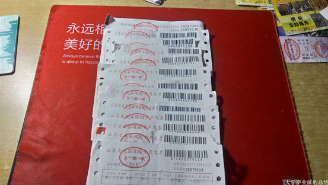
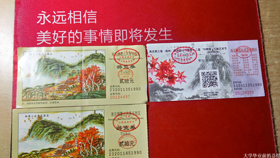

大学毕业前的总结之门票专版
第一章：学习篇之凭证专版
首先怀念下4年前收到的这个玩意
还有4年前用到的这个玩意
翻一翻竟然找到了这个玩意（当初刚来到这大学写的）
然后还有这些”狗牌”，什么三江英协，运动会裁判，学生会自律委员会干事和组长，目前仅存这四张“狗牌”了。说到这个，应该发一张跆拳道道服的，忘记拍了。
很荣幸能得到学校一等奖学金，3000块，本没觉得学校给的多，但后来和其他学校对比了一下，发现我们学校真是够慷慨的，给这么多！
三好学生，得到这个荣誉的前提是得到学校的一等或二等奖学金，而且不能有学校的处分
中英文听写大赛优秀奖，别问我优秀奖是什么级别，我只想说这种比赛重在参与。
党课结业证书，没什么值得骄傲的，不是拿到这个证书就代表你是党员了
会计从业资格证书，辛辛苦苦自学考下来，虽然和我专业不想关，我只想通过这个证明我的自学能力，因为学习能力是公司考核一个应届生的重要因素，在学校学的东西到社会上基本用不上，必须重新学，所以学习能力就显得很重要。
CAD中级证书，就业的实现并没卵用，最多也就是在简历上能多加一笔
计算机二级，最简单的那种，很好考的
汽车维修工职业证书，装逼用的，就业的时候也没什么卵用
计算机一级证书和英语四级成绩单，过个四级在正常不过了
英语六级成绩单，仔细看，你会发现一个很巧合的地方
下面的是各种准考证，什么英语竞赛，LSCAt，普通话，英语四六级，计算机二级等

左边的是我在欧尚当咖啡师的时候得到的雀巢咖啡的红包，右边的是超市里买妙语蜂蜜的大姐送给我的妙语相纸，这两个东东我一直留着，算是纪念吧
第二章：省外游之凭证专版
出去玩大多数坐的都是火车，所以留了很多火车票，一共37张，很惭愧，还不能打牌，毕竟一副扑克需要54张

这些年来积累的汽车票，少了很多，我不怎么喜欢收集汽车，我爱火车票

近两年看的电影留下的电影票，也就十几场吧！不算多
第一站：苏州。第一次出去玩，没什么经验，最后穷到住网吧
第二站：无锡。冲着无锡海底世界一元门票去的
第三站：杭州。虽然是一个人去的，但是两年都有人陪，而且有艳遇，哈哈，可惜没要她号码
镇江：去了两次，第一次跟基友去的，第二次是妹子邀我去的
上海：去了外滩，坐了外滩的江底隧道的无人驾驶观光车和磁悬浮列车，车票都是五十元
常州：就去了中华恐龙园，端午节去的，满满的全是人，表示排个队玩大摆锤等了2个多小时
连云港：当时就去了花果山，花果山你可能没听过，孙悟空和水帘洞总听过吧！花果山福地，水帘洞洞天
泰山：五岳独尊，泰山之美于其巍峨，当时是晚上爬的山，第二天看日出，所以不是很热，也多亏了路上搭讪了妹子，否则估计爬到日观峰要累成狗
青岛：最大的印象就是青岛的海水给人一种干净的感觉，至少比连云港的干净

黄山：五岳归来不看山，黄山归看不看岳，黄山确实美。记得那天爬到光明顶的时候竟然下雨了，本以为过会就会停，没想到一直下，结果被雨淋成狗
枣庄：当初去旅游是羡慕同学借找同学之便出去玩的，现在我也可以打这名义光明正大的出去旅游了。下面的是台儿庄古城，5A级景区
西塘：纯粹的古镇感觉，那两天收获最大的不是旅游经验，而是两人的情感问题，表示两个人好累
马鞍山：采石矶，门票80，学生证半价。门票虽然有点贵，但感觉物有所值
最后一站：武汉。出的最远的一次，虽然是一个人，但玩的很开心，一个人的旅行，说走就走。
第三章
：南京景点之凭证专版
大学遗憾排行榜里有一项叫没有玩遍所在城市所有有价值的地方
红山动物园：感觉去了三次，但我这只有两张票，一张学生票，一张成人票。红山动物园竟然因为我学生证上没盖注册章拒绝卖学生票给我，这等奇葩事情我玩这么多地方之经历过这一次
总统府：里面其实也没什么好看的，也许是我不感兴趣吧！来的人倒是挺多的，而且门票也不便宜
明孝陵：朱元璋的陵墓。当时没怎么拍照片，现在都记不得里面有些啥了
采石矶：门票虽便宜，但里面也很小，不过有个地方非常壮观，非常美
明城墙：玄武湖门口的城墙，类似于八达岭长城，但爬上去也没什么好玩的，大约只适合观赏吧
紫金山缆车：做过两次，第一次不知道票里有保险，怕得要死，第二次就不怕了
中山植物园：只想说对植物不感冒，没啥可说的
栖霞山：去过三次了，几乎是每逢秋天就去那看枫叶

雨花台烈士陵园：那儿几乎要门票的地方我都去了，有雨花阁，雨花纪念塔和军体冒险公园，表示对军体冒险公园好评
中山陵旅游观光车：估计如果是一个人，我不会选择做这个

莫愁湖：只有荷花盛开的季节才需要门票，我对莫愁湖的评价是对得起莫愁这两个字
下一站芬兰：室内的景点，完全模仿芬兰的特色打造的
南京博物院：去南京博物院是要刷身份证的，这点是和其他博物馆不一样的地方，除了镇江博物馆
学校自愿献血：送了我一个可爱的小绵羊，还有这个20块钱的肯德基餐饮券
校园表演节目的门票：看了很多表演，但留下的票并不多，就这么几张了
明信片：一个小伙伴寄来的诚意，一直留着。从甘肃发过来的呢！算是千里迢迢了
其实这些门票也不多，就这么点